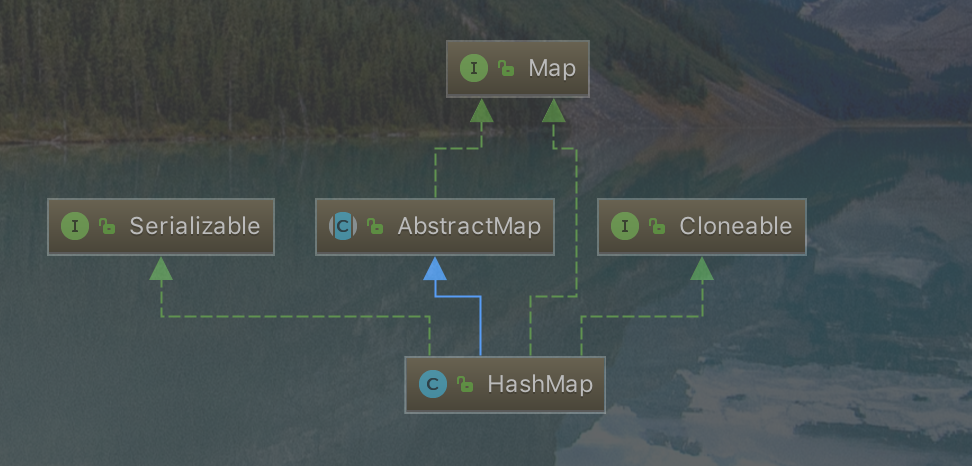

一：HashMap简介 1： HashMap存储结构

2：HashMap：它根据键的hashCode值存储数据，大多数情况下可以直接定位到它的值，因而具有很快的访问速度，但遍历顺序却是不确定的。 HashMap最多只允许一条记录的键为null，允许多条记录的值为null。HashMap非线程安全，即任一时刻可以有多个线程同时写HashMap，可能会导致数据的不一致。如果需要满足线程安全，可以用 Collections的synchronizedMap方法使HashMap具有线程安全的能力，或者使用ConcurrentHashMap。
二：源码解析 1：成员变量 bin(是hashmap专用术语，约定桶后面存放的每一个数据称为bin )
1 2 3 4 5 6 7 8 9 10 11 12 13 14 15 16 17 18 19 20 21 22 23 24 25 26 27 28 29 30 31 32 33 34 35 36 37 38 39 40 41 42 43 44 45 46 47 48 49 50 51 52 53 54 55 56 57 58 59 60 61 static final int DEFAULT_INITIAL_CAPACITY = 1 << 4 ; static final int MAXIMUM_CAPACITY = 1 << 30 ; static final float DEFAULT_LOAD_FACTOR = 0.75f ; static final int TREEIFY_THRESHOLD = 8 ; static final int UNTREEIFY_THRESHOLD = 6 ; static final int MIN_TREEIFY_CAPACITY = 64 ; transient Node<K,V>[] table; transient Set<Map.Entry<K,V>> entrySet; transient int size; transient int modCount; int threshold; final float loadFactor;
2：内部数据结构Node
1 2 3 4 5 6 7 8 9 10 11 12 13 14 15 16 17 18 19 20 21 22 23 24 25 26 27 28 29 30 31 32 33 34 35 36 37 38 39 40 41 42 static class Node <K ,V > implements Map .Entry <K ,V > final int hash; final K key; V value; Node<K,V> next; Node(int hash, K key, V value, Node<K,V> next) { this .hash = hash; this .key = key; this .value = value; this .next = next; } public final K getKey () return key; } public final V getValue () return value; } public final String toString () return key + "=" + value; } public final int hashCode () return Objects.hashCode(key) ^ Objects.hashCode(value); } public final V setValue (V newValue) V oldValue = value; value = newValue; return oldValue; } public final boolean equals (Object o) if (o == this ) return true ; if (o instanceof Map.Entry) { Map.Entry<?,?> e = (Map.Entry<?,?>)o; if (Objects.equals(key, e.getKey()) && Objects.equals(value, e.getValue())) return true ; } return false ; } }
3：构造函数 1 2 3 4 5 6 7 8 9 10 11 12 13 14 15 16 17 18 19 20 21 22 23 24 25 26 27 28 29 30 31 32 33 34 35 36 37 38 39 40 41 42 43 44 45 46 47 48 public HashMap (int initialCapacity, float loadFactor) if (initialCapacity < 0 ) throw new IllegalArgumentException("Illegal initial capacity: " + initialCapacity); if (initialCapacity > MAXIMUM_CAPACITY) initialCapacity = MAXIMUM_CAPACITY; if (loadFactor <= 0 || Float.isNaN(loadFactor)) throw new IllegalArgumentException("Illegal load factor: " + loadFactor); this .loadFactor = loadFactor; this .threshold = tableSizeFor(initialCapacity); } public HashMap (int initialCapacity) this (initialCapacity, DEFAULT_LOAD_FACTOR); } public HashMap () this .loadFactor = DEFAULT_LOAD_FACTOR; } public HashMap (Map<? extends K, ? extends V> m) this .loadFactor = DEFAULT_LOAD_FACTOR; putMapEntries(m, false ); }
4：常用方法介绍 4.1：put()方法
1 2 3 4 5 6 7 8 9 10 11 12 13 14 15 16 17 18 19 20 21 22 23 24 25 26 27 28 29 30 31 32 33 34 35 36 37 38 39 40 41 42 43 44 45 46 47 48 49 50 51 52 53 54 55 56 57 58 59 60 61 62 63 64 65 66 67 68 69 70 71 72 73 74 75 76 77 78 79 80 81 public V put (K key, V value) return putVal(hash(key), key, value, false , true ); } static final int hash (Object key) int h; return (key == null ) ? 0 : (h = key.hashCode()) ^ (h >>> 16 ); } final V putVal (int hash, K key, V value, boolean onlyIfAbsent, boolean evict) Node<K,V>[] tab; Node<K,V> p; int n, i; if ((tab = table) == null || (n = tab.length) == 0 ) n = (tab = resize()).length; if ((p = tab[i = (n - 1 ) & hash]) == null ) tab[i] = newNode(hash, key, value, null ); else { Node<K,V> e; K k; if (p.hash == hash &&((k = p.key) == key || (key != null && key.equals(k)))) e = p; else if (p instanceof TreeNode) e = ((TreeNode<K,V>)p).putTreeVal(this , tab, hash, key, value); else { for (int binCount = 0 ; ; ++binCount) { if ((e = p.next) == null ) { p.next = newNode(hash, key, value, null ); if (binCount >= TREEIFY_THRESHOLD - 1 ) treeifyBin(tab, hash); break ; } if (e.hash == hash && ((k = e.key) == key || (key != null && key.equals(k)))) break ; p = e; } } if (e != null ) { V oldValue = e.value; if (!onlyIfAbsent || oldValue == null ) e.value = value; afterNodeAccess(e); return oldValue; } } ++modCount; if (++size > threshold) resize(); afterNodeInsertion(evict); return null ; }
4.2：resize()方法
1 2 3 4 5 6 7 8 9 10 11 12 13 14 15 16 17 18 19 20 21 22 23 24 25 26 27 28 29 30 31 32 33 34 35 36 37 38 39 40 41 42 43 44 45 46 47 48 49 50 51 52 53 54 55 56 57 58 59 60 61 62 63 64 65 66 67 68 69 70 71 72 73 74 75 76 77 78 79 80 81 82 83 84 85 86 87 88 89 90 91 92 93 94 95 96 97 98 99 100 101 102 103 104 105 106 107 108 109 110 111 112 final Node<K,V>[] resize() { Node<K,V>[] oldTab = table; int oldCap = (oldTab == null ) ? 0 : oldTab.length; int oldThr = threshold; int newCap, newThr = 0 ; if (oldCap > 0 ) { if (oldCap >= MAXIMUM_CAPACITY) { threshold = Integer.MAX_VALUE; return oldTab; } else if ((newCap = oldCap << 1 ) < MAXIMUM_CAPACITY && oldCap >= DEFAULT_INITIAL_CAPACITY) newThr = oldThr << 1 ; } else if (oldThr > 0 ) newCap = oldThr; else { newCap = DEFAULT_INITIAL_CAPACITY; newThr = (int )(DEFAULT_LOAD_FACTOR * DEFAULT_INITIAL_CAPACITY); } if (newThr == 0 ) { float ft = (float )newCap * loadFactor; newThr = (newCap < MAXIMUM_CAPACITY && ft < (float )MAXIMUM_CAPACITY ? (int )ft : Integer.MAX_VALUE); } threshold = newThr; @SuppressWarnings ({"rawtypes" ,"unchecked" }) Node<K,V>[] newTab = (Node<K,V>[])new Node[newCap]; table = newTab; if (oldTab != null ) { for (int j = 0 ; j < oldCap; ++j) { Node<K,V> e; if ((e = oldTab[j]) != null ) { oldTab[j] = null ; if (e.next == null ) newTab[e.hash & (newCap - 1 )] = e; else if (e instanceof TreeNode) ((TreeNode<K,V>)e).split(this , newTab, j, oldCap); else { Node<K,V> loHead = null , loTail = null ; Node<K,V> hiHead = null , hiTail = null ; Node<K,V> next; do { next = e.next; if ((e.hash & oldCap) == 0 ) { if (loTail == null ) loHead = e; else loTail.next = e; loTail = e; } else { if (hiTail == null ) hiHead = e; else hiTail.next = e; hiTail = e; } } while ((e = next) != null ); if (loTail != null ) { loTail.next = null ; newTab[j] = loHead; } if (hiTail != null ) { hiTail.next = null ; newTab[j + oldCap] = hiHead; } } } } } return newTab; }
4.3：get()方法
1 2 3 4 5 6 7 8 9 10 11 12 13 14 15 16 17 18 19 20 21 22 23 24 25 26 27 28 29 30 31 32 33 34 35 36 37 38 39 40 41 public V get (Object key) Node<K,V> e; return (e = getNode(hash(key), key)) == null ? null : e.value; } final Node<K,V> getNode (int hash, Object key) Node<K,V>[] tab; Node<K,V> first, e; int n; K k; if ((tab = table) != null && (n = tab.length) > 0 && (first = tab[(n - 1 ) & hash]) != null ) { if (first.hash == hash && ((k = first.key) == key || (key != null && key.equals(k)))) return first; if ((e = first.next) != null ) { if (first instanceof TreeNode) return ((TreeNode<K,V>)first).getTreeNode(hash, key); do { if (e.hash == hash && ((k = e.key) == key || (key != null && key.equals(k)))) return e; } while ((e = e.next) != null ); } } return null ; }
4.4：putAll()方法
1 2 3 4 5 6 7 8 9 10 11 12 13 14 15 16 17 18 19 20 21 22 23 24 25 26 27 28 29 30 31 32 33 34 35 36 37 38 39 public void putAll (Map<? extends K, ? extends V> m) putMapEntries(m, true ); } final void putMapEntries (Map<? extends K, ? extends V> m, boolean evict) int s = m.size(); if (s > 0 ) { if (table == null ) { float ft = ((float )s / loadFactor) + 1.0F ; int t = ((ft < (float )MAXIMUM_CAPACITY) ? (int )ft : MAXIMUM_CAPACITY); if (t > threshold) threshold = tableSizeFor(t); } else if (s > threshold) resize(); for (Map.Entry<? extends K, ? extends V> e : m.entrySet()) { K key = e.getKey(); V value = e.getValue(); putVal(hash(key), key, value, false , evict); } } }
4.5：remove()方法
1 2 3 4 5 6 7 8 9 10 11 12 13 14 15 16 17 18 19 20 21 22 23 24 25 26 27 28 29 30 31 32 33 34 35 36 37 38 39 40 41 42 43 44 45 46 47 48 49 50 51 52 53 54 55 56 57 58 59 60 61 62 63 64 65 66 @Override public boolean remove (Object key, Object value) return removeNode(hash(key), key, value, true , true ) != null ; } final Node<K,V> removeNode (int hash, Object key, Object value, boolean matchValue, boolean movable) Node<K,V>[] tab; Node<K,V> p; int n, index; if ((tab = table) != null && (n = tab.length) > 0 && (p = tab[index = (n - 1 ) & hash]) != null ) { Node<K,V> node = null , e; K k; V v; if (p.hash == hash && ((k = p.key) == key || (key != null && key.equals(k)))) node = p; else if ((e = p.next) != null ) { if (p instanceof TreeNode) node = ((TreeNode<K,V>)p).getTreeNode(hash, key); else { do { if (e.hash == hash && ((k = e.key) == key || (key != null && key.equals(k)))) { node = e; break ; } p = e; } while ((e = e.next) != null ); } } if (node != null && (!matchValue || (v = node.value) == value || (value != null && value.equals(v)))) { if (node instanceof TreeNode) ((TreeNode<K,V>)node).removeTreeNode(this , tab, movable); else if (node == p) tab[index] = node.next; else p.next = node.next; ++modCount; --size; afterNodeRemoval(node); return node; } } return null ; }
haspMap其它方法就不一一介绍。下一篇文章会对hashMap进行总结以及面试会被问的问题。